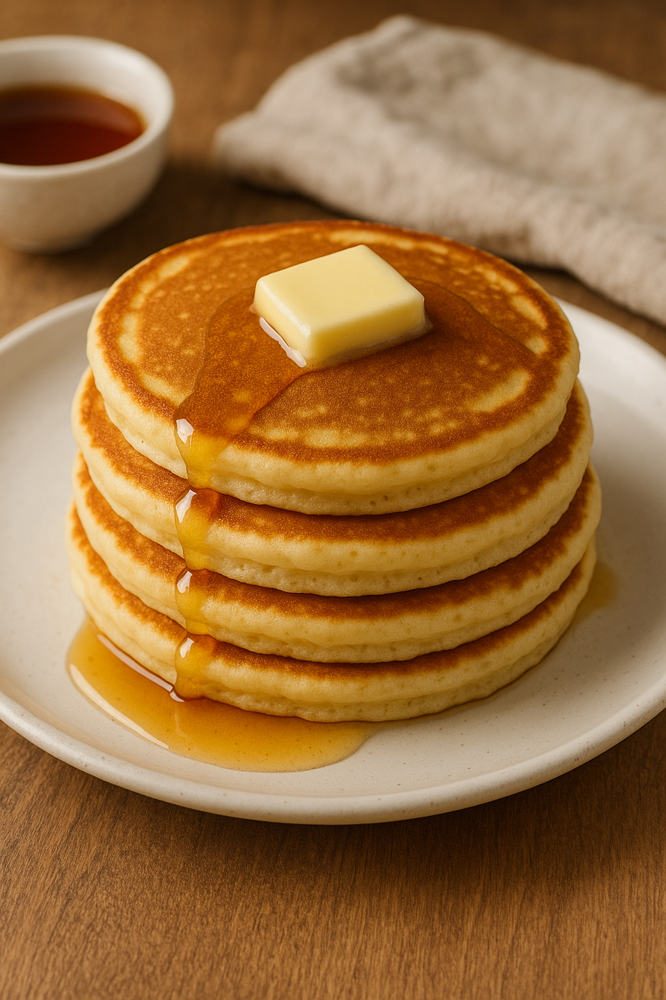

Home
Pancake

Description
Fluffy, golden-brown pancakes stacked high and topped with a pat of
melting butter and a generous drizzle of maple syrup
— a warm, comforting breakfast classic perfect for any morning.
- 1 cup flour
- 1 tbsp sugar
- 1 tsp baking powder
- 1/2 tsp baking soda
- 1 cup milk
- 1 egg
- 2 tbsp melted butter
- pinch of salt
Steps
- mix dry ingredients in a bowl
- in another bowl, whisk milk, egg,and butter
- combine wt and dry, mix until just smooth
- heat pan, grease lightly
- pour batter, cook until bubbles form, flip cook other side
- serve with butter and syrup